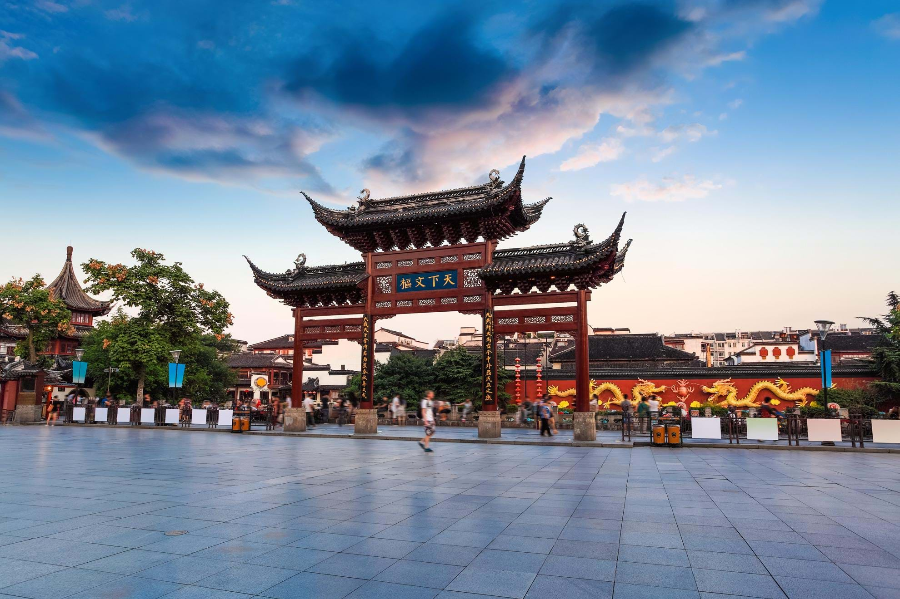
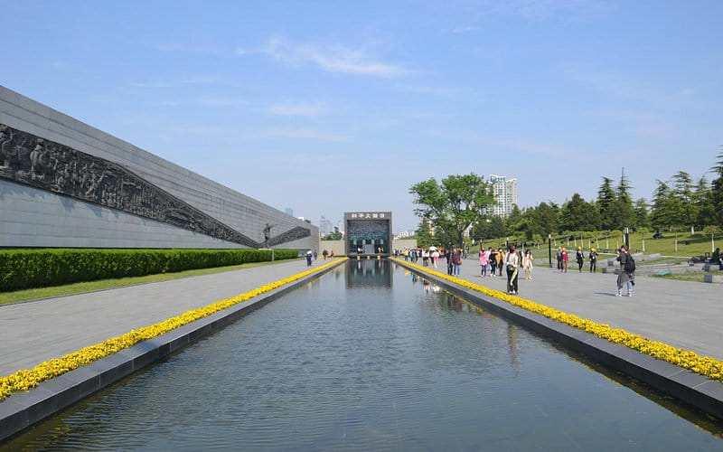
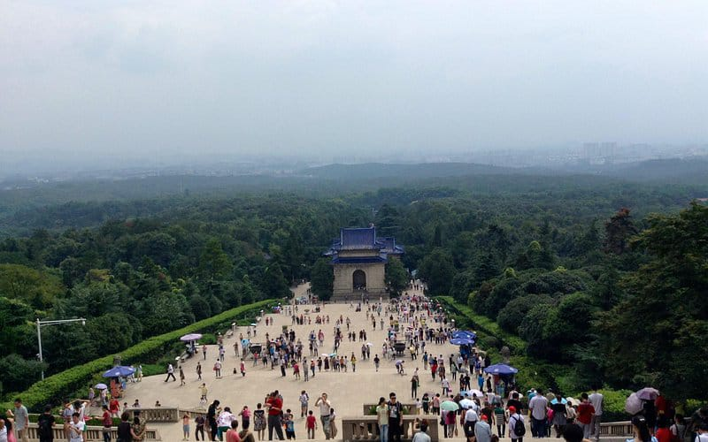
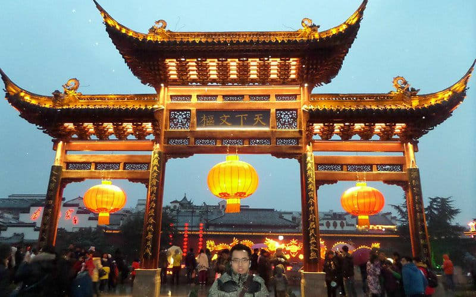

<!DOCTYPE html>
<html lang="en">

<head>
    <meta charset="UTF-8">
    <meta name="viewport" content="width=device-width, initial-scale=1.0">
    <link href="https://cdn.jsdelivr.net/npm/bootstrap@5.3.3/dist/css/bootstrap.min.css" rel="stylesheet"
        integrity="sha384-QWTKZyjpPEjISv5WaRU9OFeRpok6YctnYmDr5pNlyT2bRjXh0JMhjY6hW+ALEwIH" crossorigin="anonymous">
    <title>Document</title>
</head>

<body>
    <script src="https://cdn.jsdelivr.net/npm/bootstrap@5.3.3/dist/js/bootstrap.bundle.min.js"
        integrity="sha384-YvpcrYf0tY3lHB60NNkmXc5s9fDVZLESaAA55NDzOxhy9GkcIdslK1eN7N6jIeHz"
        crossorigin="anonymous"></script>
</body>

</html>
<nav class="navbar navbar-expand-lg bg-body-tertiary">
    <div class="container-fluid">
        <a class="navbar-brand" href="#">Navbar</a>
        <button class="navbar-toggler" type="button" data-bs-toggle="collapse" data-bs-target="#navbarSupportedContent"
            aria-controls="navbarSupportedContent" aria-expanded="false" aria-label="Toggle navigation">
            <span class="navbar-toggler-icon"></span>
        </button>
        <div class="collapse navbar-collapse" id="navbarSupportedContent">
            <ul class="navbar-nav me-auto mb-2 mb-lg-0">
                <li class="nav-item">
                    <a class="nav-link active" aria-current="page" href="#">Home</a>
                </li>
                <li class="nav-item">
                    <a class="nav-link" href="#">Link</a>
                </li>
                <li class="nav-item dropdown">
                    <a class="nav-link dropdown-toggle" href="#" role="button" data-bs-toggle="dropdown"
                        aria-expanded="false">
                        Dropdown
                    </a>
                    <ul class="dropdown-menu">
                        <li><a class="dropdown-item" href="#">Action</a></li>
                        <li><a class="dropdown-item" href="#">Another action</a></li>
                        <li>
                            <hr class="dropdown-divider">
                        </li>
                        <li><a class="dropdown-item" href="#">Something else here</a></li>
                    </ul>
                </li>
                <li class="nav-item">
                    <a class="nav-link disabled" aria-disabled="true">Disabled</a>
                </li>
            </ul>
            <form class="d-flex" role="search">
                <input class="form-control me-2" type="search" placeholder="Search" aria-label="Search">
                <button class="btn btn-outline-success" type="submit">Search</button>
            </form>
        </div>
    </div>
</nav>
<!-- 3. Carousel (Header Image) -->
<div id="headerCarousel" class="carousel slide" data-bs-ride="carousel">
    <div class="carousel-inner">
        <div class="carousel-item active">
            
            <div class="carousel-caption d-none d-md-block">
                <h5>Petualangan Di Kota Indah Nanjing Tiongkok</h5>
                <p>Temukan tempat tempat indah tersembunyi di Nanjing Tiongkok</p>
            </div>
        </div>
        <div class="carousel-item">
            
            <div class="carousel-caption d-none d-md-block">
                <h5>Rich Culture & History</h5>
                <p>Experience the diverse culture and history of Kazakhstan.</p>
            </div>
        </div>
        <div class="carousel-item">
            
            <div class="carousel-caption d-none d-md-block">
                <h5>Rich Culture & History</h5>
                <p>Experience the diverse culture and history of Kazakhstan.</p>
            </div>
        </div>
    </div>
    <!-- 4. Carousel Controls -->
    <button class="carousel-control-prev" type="button" data-bs-target="#headerCarousel" data-bs-slide="prev">
        <span class="carousel-control-prev-icon" aria-hidden="true"></span>
        <span class="visually-hidden">Previous</span>
    </button>
    <button class="carousel-control-next" type="button" data-bs-target="#headerCarousel" data-bs-slide="next">
        <span class="carousel-control-next-icon" aria-hidden="true"></span>
        <span class="visually-hidden">Next</span>
    </button>
</div>
<!-- 5. Breadcrumb -->
<nav aria-label="breadcrumb">
    <ol class="breadcrumb my-4">
        <li class="breadcrumb-item"><a href="#">Home</a></li>
        <li class="breadcrumb-item active" aria-current="page">Attractions</li>
    </ol>
</nav>

<!-- 6. Grid Layout for Content -->
<div class="container">
    <div class="row">
        <!-- 7. List Group (Filter Sidebar) -->
        <div class="col-md-3">
            <h5>Filters</h5>
            <div class="list-group mb-4">
                <a href="#" class="list-group-item list-group-item-action active">Semua</a>
                <a href="#" class="list-group-item list-group-item-action">Musium Sejarah</a>
                <a href="#" class="list-group-item list-group-item-action">Pemakaman</a>
                <a href="#" class="list-group-item list-group-item-action">Reruntuhan Kuno</a>

            </div>

            <!-- 8. Card with List Group -->
            <div class="card">
                <div class="card-header">
                    Kota Populer
                </div>
                <ul class="list-group list-group-flush">
                    <li class="list-group-item">Memorial Hall Of</li>
                    <li class="list-group-item">Sun Yatsen Mausoleum</li>
                    <li class="list-group-item">Xiaoling Tomb Of Ming Dynasty</li>

            </div>

            <!-- 9. Progress Bar -->
            <div class="mt-4">
                <h6>Planning Progress</h6>
                <div class="progress">
                    <div class="progress-bar" role="progressbar" style="width: 60%;" aria-valuenow="60"
                        aria-valuemin="0" aria-valuemax="100">60%</div>
                </div>
            </div>

            <!-- 10. Badge -->
            <h6 class="mt-4">Destinasi Terbaik <span class="badge bg-success">Baru</span></h6>
        </div>

        <!-- 11. Cards (Attractions List) -->
        <div class="col-md-9">
            <div class="row">
                <!-- Card 1 -->
                <div class="col-md-4 mb-4">
                    <div class="card h-100">
                        
                        <div class="card-body">
                            <h6 class="card-title">Memorial Hall Of The Vistims In Nanjing</h6>
                            <p class="card-text"></p>Aula Peringatan Korban Pembantaian Nanjing oleh Penjajah Jepang
                            adalah sebuah museum yang didirikan untuk mengenang mereka yang terbunuh dalam Pembantaian
                            Nanjing oleh Tentara Kekaisaran Jepang di dalam dan sekitar ibu kota Tiongkok saat itu,
                            Nanjing, setelah kota tersebut jatuh pada tanggal 13 Desember 1937. Museum ini terletak di
                            sudut barat daya pusat kota Nanjing yang dikenal sebagai Jiangdongmen (江东门), dekat dengan
                            sebuah lokasi di mana ribuan mayat dikuburkan, yang disebut sebagai "lubang sepuluh ribu
                            orang" (aksara Tionghoa sederhana: 万人坑; aksara Tionghoa tradisional: 萬人坑; pinyin: wàn rén
                            kēng)..</p>
                            <a href="#" class="btn btn-primary">Selengkapnya</a>
                        </div>
                    </div>
                </div>
                <!-- Card 2 -->
                <div class="col-md-4 mb-4">
                    <div class="card h-100">
                        
                        <div class="card-body">
                            <h6 class="card-title">Sun Yatsen Mausoleum</h6>
                            <p class="card-text">Mausoleum Sun Yat-sen (Hanzi: 中山陵; Pinyin: Zhōng shān líng) berada di
                                kaki puncak kedua Pegunungan Ungu di Nanjing, Tiongkok. Pembuatan makam ini dimulai pada
                                Januari 1926 dan rampung pada musim semi 1929. Arsiteknya adalah Lu Yanzhi, yang
                                meninggal tidak lama setelah mausoleum ini selesai. Mausoleum Sun Yat-sen termasuk salah
                                satu dari kelompok pertama tempat wisata yang dikategorikan 5A oleh Administrasi
                                Pariwisata Nasional Tiongkok.[1][2]. </p>
                            <a href="#" class="btn btn-primary">Selengkapnya</a>
                        </div>
                    </div>
                </div>
                <!-- Card 3 -->
                <div class="col-md-4 mb-4">
                    <div class="card h-100">
                        
                        <div class="card-body">
                            <h6 class="card-title">Xioaling Tomb Of Ming Dynasty</h6>
                            <p class="card-text">Makam Xiaoling dari Dinasti Ming (Mingxiaoling) adalah salah satu makam
                                kekaisaran terbesar di Tiongkok. Makam ini terletak di pinggiran timur Kota Nanjing, di
                                kaki selatan Gunung Ungu. Kaisar Chengzu, Zhu Yuanzhang, yang merupakan kaisar pertama
                                Dinasti Ming (1368-1644), dan Ratu Ma dimakamkan di sana.

                                Makam Xiaoling terkenal karena desainnya yang unik, statusnya yang terkemuka,
                                keindahannya yang menakjubkan, dan skala kemegahannya. Makam ini merupakan tonggak
                                penting dalam perkembangan sejarah makam-makam Tiongkok. Sebagai bagian dari
                                perpanjangan 'Makam Kekaisaran Dinasti Ming dan Qing,' tempat ini terdaftar oleh UNESCO
                                sebagai situs warisan budaya dunia. </p>
                            <a href="#" class="btn btn-primary">Selengkapnya</a>
                        </div>
                    </div>

                </div>
            </div>

            <!-- 12. Pagination -->
            <nav aria-label="Page navigation">
                <ul class="pagination justify-content-center">
                    <li class="page-item disabled">
                        <a class="page-link" href="#" tabindex="-1" aria-disabled="true">Sebelumnya</a>
                    </li>
                    <li class="page-item"><a class="page-link" href="#">1</a></li>
                    <li class="page-item"><a class="page-link" href="#">2</a></li>
                    <li class="page-item"><a class="page-link" href="#">3</a></li>
                    <li class="page-item">
                        <a class="page-link" href="#">Berikutnya</a>

                    </li>
                </ul>
            </nav>

            <!-- 13. Alert -->
            <div class="alert alert-warning alert-dismissible fade show mt-4" role="alert">
                <strong>Pemberitahuan:</strong> Wisata petualangan seru menanti Anda! Pastikan Anda mengikuti panduan
                keselamatan demi pengalaman yang menyenangkan.
                <button type="button" class="btn-close" data-bs-dismiss="alert" aria-label="Close"></button>
            </div>


            <!-- 14. Table -->
            <h5 class="mt-4">3 Wisata Terpopuler</h5>
            <table class="table table-striped mt-3">
                <thead>
                    <tr>
                        <th>#</th>
                        <th>Wisata</th>
                        <th>Peringkat</th>
                        <th>Lokasi</th>
                    </tr>
                </thead>
                <tbody>
                    <tr>
                        <th scope="row">1</th>
                        <td>Memorial </td>
                        <td>4.7</td>
                        <td> Nanjing</td>
                    </tr>
                    <tr>
                        <th scope="row">4</th>
                        <td>Ile-Sun Yatsen</td>
                        <td>4.7</td>
                        <td>Nanjing</td>
                    </tr>
                    <tr>
                        <th scope="row">3</th>
                        <td>Xiaoling Tomb
                        </td>
                        <td>4.7</td>
                        <td>Nanjing</td>
                    </tr>
                    <tr>